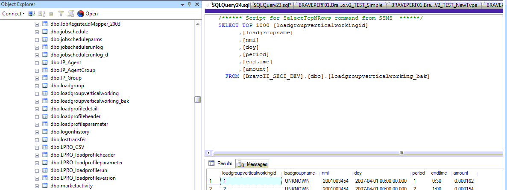
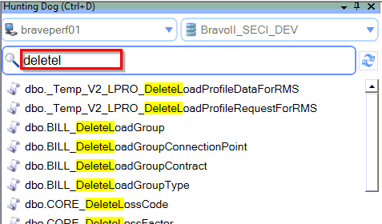
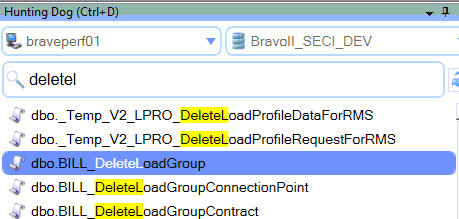

Why default SSMS Object Browser kills time of people working with SQL Server
This tool was created for developers and database administrators who work with Microsoft SQL Server Management Studio 2008 (or 2012) every day. Unfortunately, the default Object Explorer is hard to use, especially when you need to quickly find a desired table or procedure. SSMS forces the user to perform 7-10 different actions to navigate to the table and then another 3-5 actions just to query that table to inspect the table schema. All those unnecessary activities consume a huge amount of time of the SQL Server developer or administrator.
Let us have a look how many actions we have to perform to open a stored procedure for investigation assuming that SQL Server Database contains more than 100 stored procedures (this is quite typical for the real production systems).

-
The user has to collapse the Object Explorer tree and expand "Stored
Procedures" folder. This usually takes 3-5 mouse clicks:

-
Then the user has to set the filtering criteria, because it is very hard to select
a stored procedure from the Object Explorer plain list, epecially if the list
contains more than 100 records (2 clicks):

-
Then the user can define the filter criteria and click "OK" (2 clicks):

- Then SSMS shows only matching stored procedures, and now the user can select from a smaller set.
- Now the user has to tell SSMS that he wants to open the stored procedure for modification. It costs him 2 clicks (right-click on the Stored Procedure name, then navigation to "MODIFY" sub menu, and left-click).
- Hooray! Now SQL Server Management Studio shows the stored procedure body to the user. It costed the user about 10 clicks and about 10 seconds of his time. What a waste...
How can you do it quicker? Imagine that you could locate and open a stored procedure in SSMS with the only click? SQL Hunting Dog was developed to help developers and database administrators work with SQL Server Management Studio more efficiently. It gives "google-like" search inside SSMS:
-
You type the stored procedure name (or part of the name)

-
You select it from the matching list

-
You open the stored procedure with a single keystroke

Amazingly simple! And it integrates inside existing instance of SQL Server Management Studio. Hunting Dog is compatible with the following SSMS versions:
- SQL Server Management Studio 2008 (32 bit and 64 bit)
- SQL Server Management Studio 2008R2 (32 bit and 64 bit)
- SQL Server Management Studio 2012 (32 bit and 64 bit)
From my personal experience and from experience of my other senior developers this plug-in is a must have if you a professional SQL Server developer and you are using SSMS in you everyday work.